Envie de lire l'histoire en détail ?
Ci-dessous se trouve un résumé, mais vous pouvez découvrir l'histoire dans son intégralité.
Lire l'histoire complète →À Mantasoa, sur les hauts plateaux malgaches, à 1 400 mètres d'altitude, l'école Emmanuel est née d'une conviction simple et tenace : chaque enfant mérite d'apprendre, quelles que soient les difficultés de la région. Voici son histoire, telle que l'ont racontée Odile Raherinirina, sa fondatrice, et les institutrices.
1998 — La naissance de l'école
Tout commence avec Odile Raherinirina, institutrice originaire du village. Une cousine lui demande un jour de donner quelques cours à ses enfants. Dès le lendemain, des dizaines d'autres enfants se présentent — dont beaucoup ne sont pas scolarisés. À Madagascar, un enfant né hors d'une structure médicale n'est pas reconnu par l'État : sans acte de naissance, il n'a pas le droit d'aller à l'école.
Odile choisit d'accueillir les plus démunis et entreprend, à ses frais, les démarches au tribunal de la capitale pour régulariser leur situation. Certains de ces premiers enfants sont aujourd'hui à l'université.
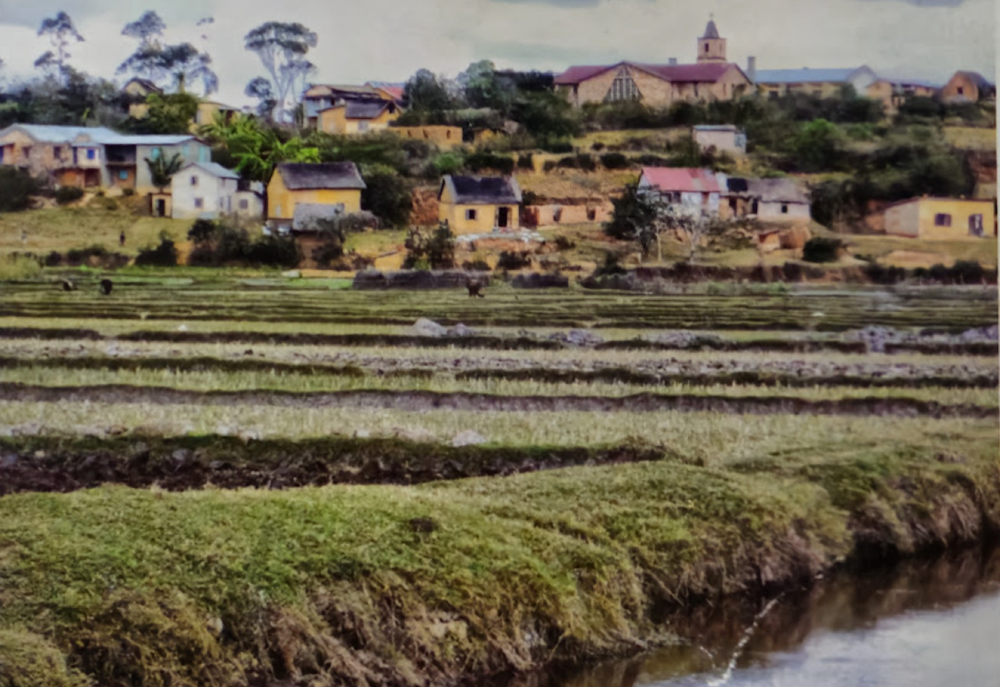
Le 5 octobre 1998, l'école ouvre ses portes sous le nom de « Maranatha ». Deux classes, 85 élèves, et Odile seule pour tous les enseigner. Les cours se tiennent dans une pièce, puis dans une maison inachevée : un tableau fait d'un panneau de contre-plaqué, des bancs de planches posées sur des briques, une simple ardoise pour tout matériel. Pour plus de la moitié des élèves — les plus pauvres et les orphelins — l'école est gratuite, et Odile met en place une aide alimentaire pour les enfants qui ont faim.
Une école qui se construit
Les progrès des enfants frappent tout le village. L'école obtient son autorisation officielle d'ouverture en 1999, mais elle a besoin de vrais locaux. Le projet trouve un soutien financier auprès d'une association humanitaire française ; l'un de ses membres, Julien Meseguer, s'installe à Mantasoa et finance la construction.
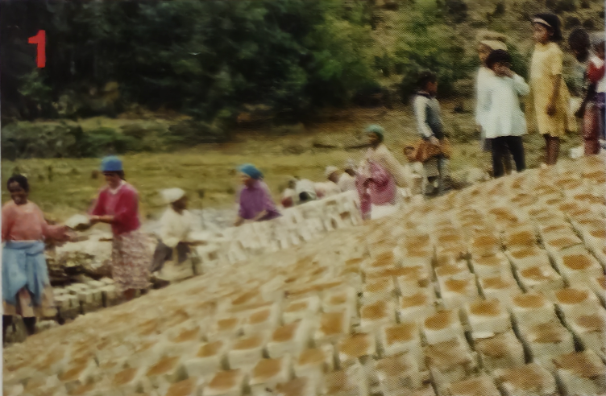
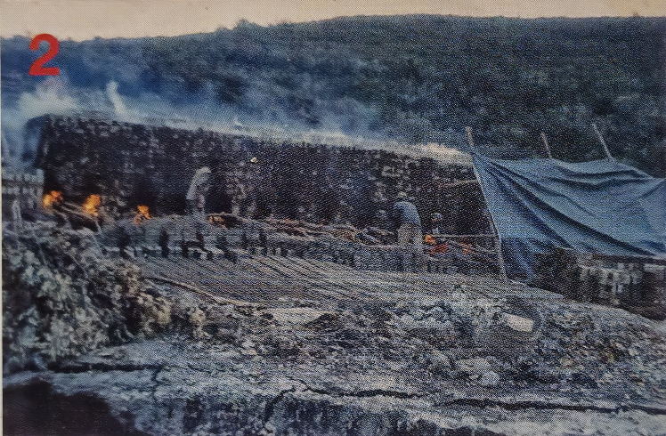
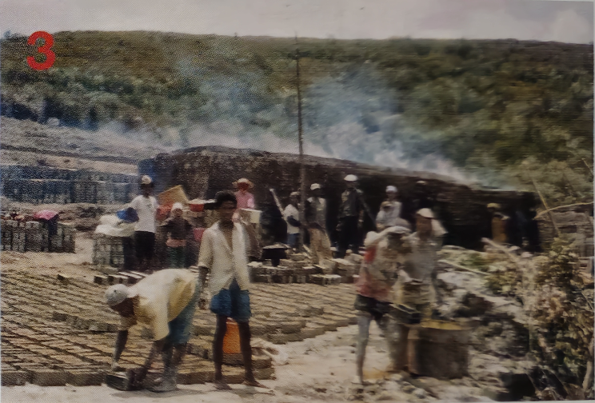
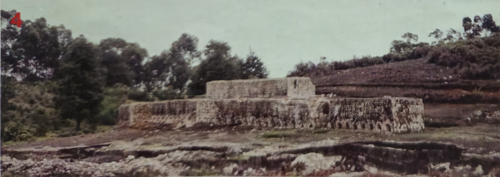
Mais l'école se bâtit surtout par le travail du village : des milliers de briques d'argile sont fabriquées à la main et cuites au feu de bois durant la nuit, pendant que les femmes préparent les repas des ouvriers. Les fondations sont posées début 2001, et la première rentrée dans le nouveau bâtiment a lieu le 18 septembre 2001. L'école est alors rebaptisée « Emmanuel », le nom qu'elle porte encore aujourd'hui.
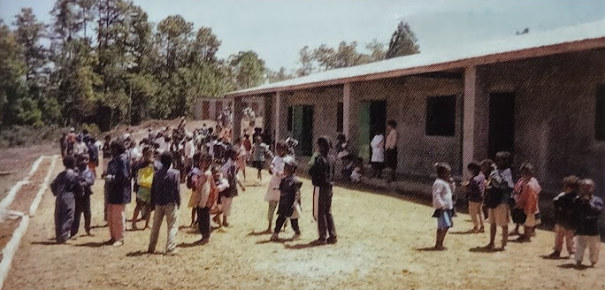
L'école se pare de couleurs, et une rotonde est construite pour permettre aux élèves de manger à l'abri du soleil. Monsieur Lala, président des parents d'élèves, prête sa voiture et soude les portes ; chacun met la main à l'ouvrage.
Une école reconnue
En 2002, l'école porte officiellement son nom : « École Privée Emmanuel ». L'année suivante, elle présente pour la première fois ses élèves aux examens officiels — et les résultats sont remarquables : la meilleure élève de tout le centre d'examen, qui compte des centaines de candidats, vient d'Emmanuel. Ce ne sera pas un hasard isolé : année après année, les élèves de l'école prennent les premières places du district, souvent avec 100 % de réussite.
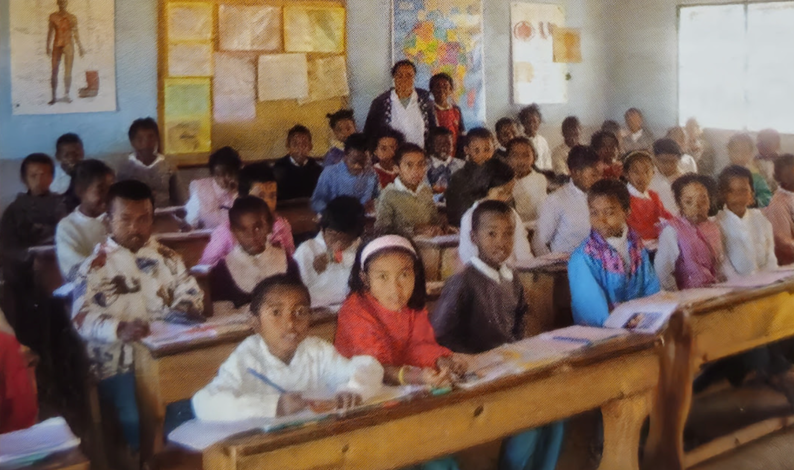
L'école se dote d'un uniforme aux couleurs des deux drapeaux — vert et blanc du drapeau malgache, bleu du drapeau français — en clin d'œil à Odile, malgache, et à Julien, français. La vie de l'école s'enrichit : équipes de football qui gagnent les tournois de la région, cours de couture gratuits qui offrent un métier à de nombreuses femmes du village, premiers ordinateurs pour la gestion. L'effectif dépasse les 300 élèves.
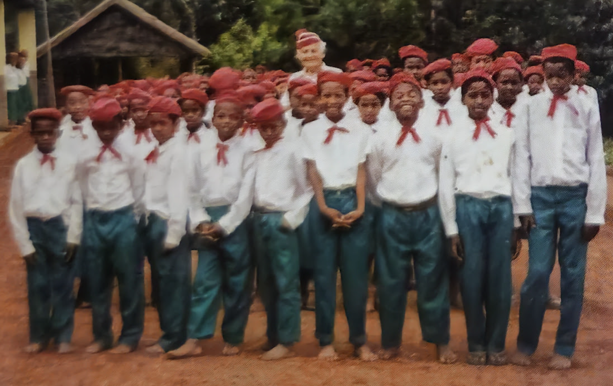
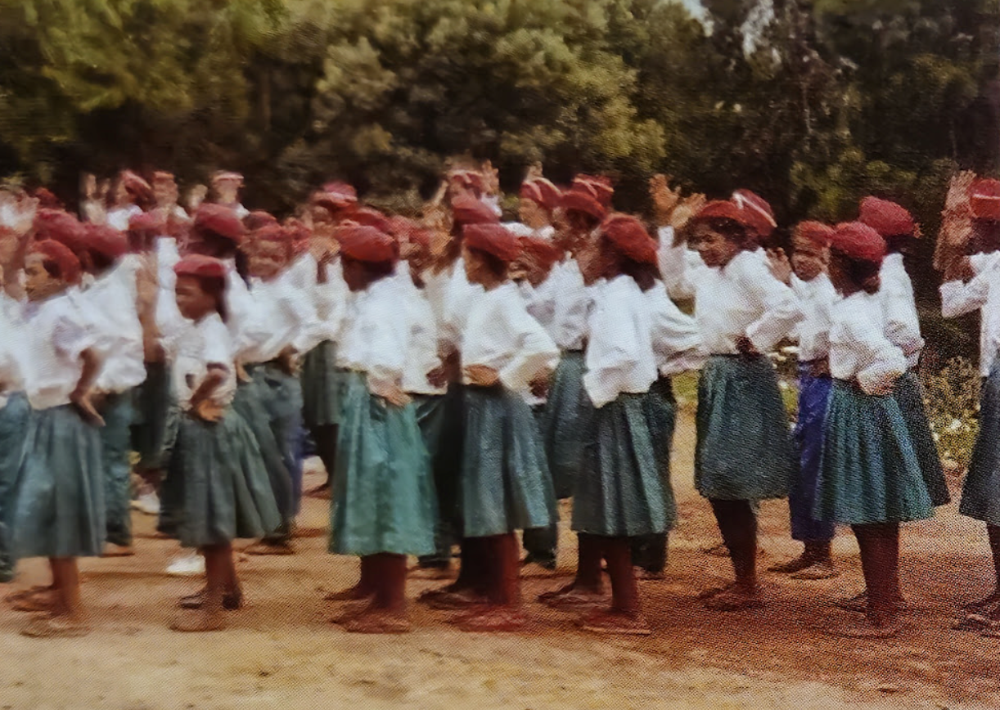
Épreuves et solidarité
En 2009, une grave crise politique secoue Madagascar et les aides de l'État aux écoles privées cessent. Face à l'adversité, les institutrices et le personnel organisent leur propre entraide, l'« Akandray » : chaque mois, chacun verse une part dans un fonds commun, reversé à tour de rôle, et l'on se cotise pour toute famille frappée par la maladie ou un deuil.
L'école connaît aussi le deuil : un soir de réveillon, deux élèves se noient en traversant le lac en pirogue. Pour gagner en autonomie, l'école développe une plantation d'ananas, un potager, un verger et une rizière, et achète une vache laitière, Soambola, dont le lait sert à faire des glaces pour les enfants. Un bol de riz est offert chaque jour aux plus démunis.
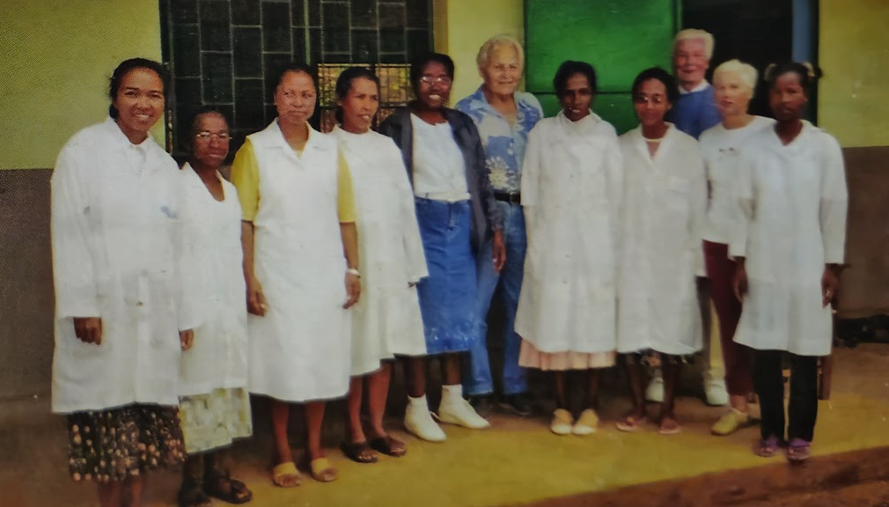
Malgré des classes parfois surchargées — plus de soixante élèves — la solidarité entre institutrices et l'attention portée aux familles restent le cœur du fonctionnement de l'école.
Parrainages et soutien
À partir de 2011, un système de parrainage se met en place : pour une trentaine d'euros par an (puis quarante), un parrain couvre la scolarité complète d'un enfant. Les parents des élèves concernés n'ont alors plus rien à débourser. Pour encadrer ces parrainages, une association, « Emmanuel », est créée en France en 2013.
Le mouvement grandit vite : fin 2014, ce sont déjà 179 enfants parrainés, soutenus par des marraines et des parrains venus de toute la France, mais aussi de Suisse, de La Réunion et de Madagascar.
L'école aujourd'hui
En 2013-2014, l'école compte 330 élèves, de la maternelle au CM2. La plupart habitent à plus de cinq kilomètres : ils viennent à pied, à vélo, ou traversent le lac en pirogue. Malgré tout, ils arrivent chaque matin avec la même soif d'apprendre.
Ce sont Odile et les institutrices qui ont écrit cette histoire, d'abord pour répondre à une obligation administrative, puis pour la partager. C'est de leur livret qu'est tiré ce récit.
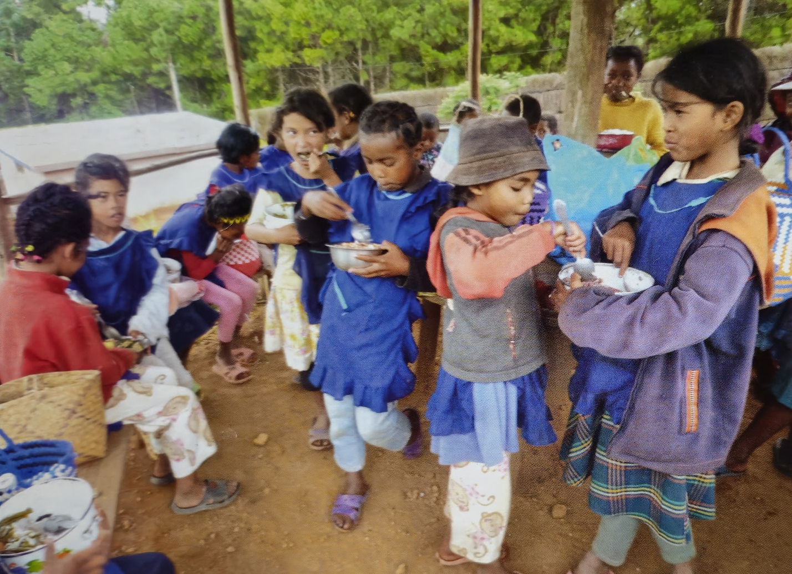
Cette histoire continue de s'écrire
Et vous pouvez y prendre part. Votre soutien permet à l'école Emmanuel de poursuivre sa mission.
Nous aider →